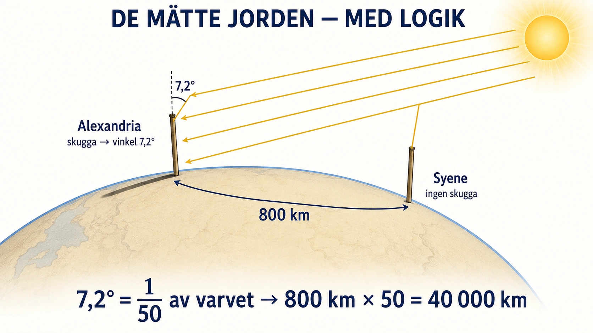

Standardtexten nämner att staden Alexandria i Egypten blev ett centrum för lärdom, med ett berömt bibliotek. Bakom den korta meningen döljer sig en av forntidens djärvaste idéer: att samla all världens kunskap på ett enda ställe. Och den idén är kulmen på en tråd vi följt ända sedan förra delen — från lertavlor som räknade säd, till en skrift som kunde bära idéer, till en plats där idéerna kunde samlas och byggas vidare.

Ett bibliotek som ville äga allt. Alexandria grundades av Alexander och blev huvudstad i det grekiska kungadöme som styrde Egypten efter honom. Där byggdes ett bibliotek och en forskningsanläggning, Museion, med en nästan galen ambition: att samla en kopia av varje bok som fanns i den kända världen. Enligt berättelserna genomsöktes alla skepp som lade till i hamnen efter skrifter — hittades en bok togs den in, kopierades, och ibland behöll biblioteket originalet och gav tillbaka kopian. Man skickade agenter för att köpa upp texter i främmande länder. Målet var inte blygsamt: allt som någon någonsin skrivit skulle finnas under ett tak.
Och det lockade tänkarna. Där böckerna samlas, samlas också de som vill läsa dem. Alexandria blev en magnet för forntidens skarpaste hjärnor. Här arbetade Eukleides, som samlade och ordnade geometrin i ett system av bevis som användes i över tvåtusen år. Här räknade Eratosthenes ut jordens omkrets — enbart genom att mäta hur solen föll på två olika platser i Egypten och tänka logiskt kring skillnaden. Han kom förvånansvärt nära det verkliga värdet, tusentals år innan någon kunde resa runt jorden och kontrollera det. Astronomer, läkare, matematiker och geografer möttes, läste varandras verk, och byggde vidare. Kunskap kunde staplas — precis den poäng vi mötte i guldåldern, nu satt i system.
Den perfekta hellenistiska platsen. Alexandria var också ett praktexempel på det Alexanders värld handlade om: blandningen. Här möttes grekisk, egyptisk, babylonisk och judisk lärdom. Ett berömt exempel är att de judiska heliga skrifterna översattes till grekiska just i Alexandria, så att de kunde läsas av den grekisktalande världen. I biblioteket låg texter från vitt skilda folk sida vid sida, och lärda från olika kulturer kunde jämföra och lära av varandra. Det var hellenismen i sin bästa form — inte en kultur som trängde undan andra, utan flera som möttes på samma plats.
Vad hände med det? Vi föreställer oss ofta att biblioteket gick under i en enda dramatisk brand. Verkligheten är mindre spektakulär och mer sorglig: biblioteket tynade bort under lång tid, genom krig, minskande stöd, försummelse och att lärda skingrades. Det fanns ingen enda katastrofnatt — snarare ett långsamt förfall. Många av de texter som samlats där gick förlorade för alltid, och vi vet i dag att en stor del av antikens kunskap försvann på det viset. Vad som fanns i de förlorade bokrullarna kan vi bara gissa.
Varför det spelar roll. Alexandrias bibliotek är värt att minnas inte bara för vad det innehöll, utan för idén bakom det: att kunskap är värd att samla, bevara, ordna och dela — att den blir större när den läggs bredvid annan kunskap än när den ligger utspridd. Den idén överlevde långt efter att själva biblioteket var borta. Varje bibliotek, varje uppslagsverk, varje försök att samla mänsklighetens vetande på ett ställe är en avlägsen släkting till drömmen i Alexandria. Och som så mycket annat från den grekiska världen fördes den drömmen vidare — nästa arvtagare, återigen, blir Rom.